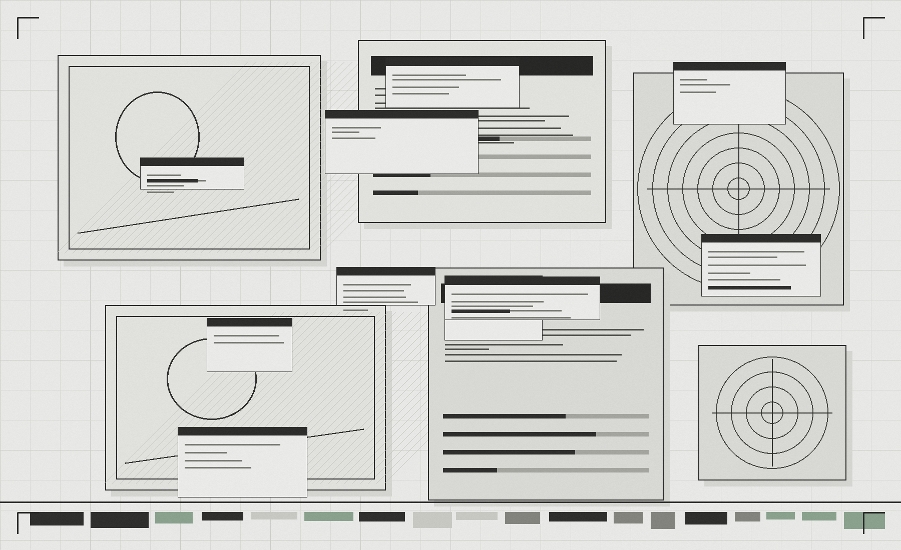
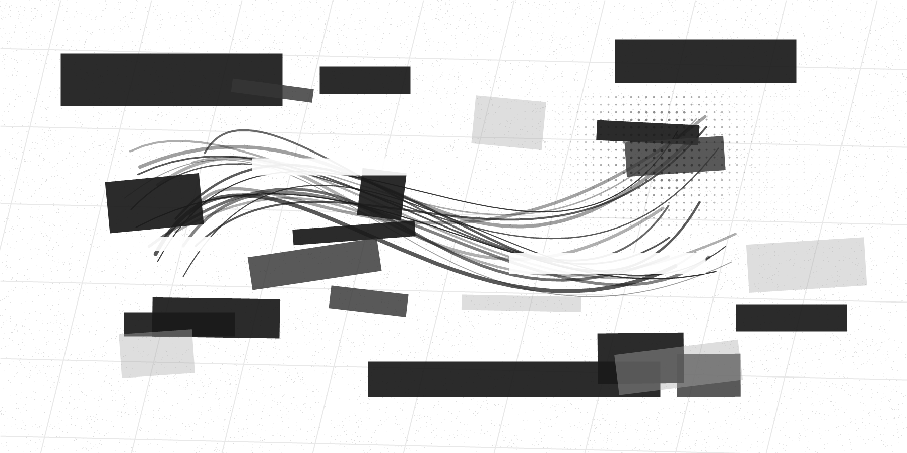

北京科技大学 / 硕士
材料科学与工程。硕士期间发表 2 篇 SCI，把“先拆问题、再验证、再复盘”的研究习惯，迁移成现在拆剧情、搭流程、做 AIGC 生产系统的底层方法。
01 // LIFE PATH
我的关键词不是“转行”，而是把研究训练、审美直觉、工具搭建和内容表达，慢慢合成一条自己的路。能钻进流程，也敢把自己推到新的创作现场。
材料科学与工程。硕士期间发表 2 篇 SCI，把“先拆问题、再验证、再复盘”的研究习惯，迁移成现在拆剧情、搭流程、做 AIGC 生产系统的底层方法。
不满足于只做执行者，持续学习镜头语言、拉片分析和导演思维；擅长把一个模糊创意拆成画面、提示词、资产、版本和可协作流程。
主导自动化报告工具，覆盖 6 类核心产品、400 余种产品型号；后续又在飞书搭建资产管理表格，减少沟通成本，提升团队协作效率。
研会宣传部产出 50+ 篇新闻稿，覆盖 1000+ 师生用户；本科创新设计大赛一等奖。长期在“表达”和“系统”之间找到自己的位置。

02 // Professional Path
AI 不是捷径，它是镜头语言的放大器。真正决定成片质感的，是剧本拆解、审美判断与制作取舍。
我当前聚焦 AI 精品短剧制作与 AI 工作流搭建。我的优势不只是会用工具，而是能把剧本判断、镜头语言、提示词、模型接口与成片交付串成一条稳定生产线。
入职 3 个月完成精品短剧创作 5 部，其中 3 部上线 ReelShort、TikTok 等平台，2 部播放量破百万。这个结果背后，是对海外短剧节奏、画面标准、人物情绪与制作效率的持续打磨。
03 // SELECTED WORKS
作品样片仅用于求职技能展示，已按保密要求做精简处理；未放入公开视频时展示保密占位卡，完整高清作品集可面试沟通后定向提供。
注：本案例仅作求职技能展示，涉及项目保密协议，请勿公开传播。
04 // CREATIVE PRODUCTION MAP
这里不罗列技能点，而展示我如何把创意、工具、流程和协作，变成真实可交付的短剧生产力。
AIGC Full-Cycle Production
能参与从剧情理解、资产拆解、分镜提示词到成片优化的完整流程，并有真实上线结果验证。
View DetailsSOP Standardization
曾调研 15 人技术团队诉求，搭建 6 套标准化报告模板，覆盖 400 余种产品型号；入职后将此能力迁移至 AIGC 短剧生产，并在飞书搭建资产管理表格，提升协作效率、减少沟通成本。
View DetailsPrompt System
从大量项目实践中发现画面生成规律，并沉淀为团队可复用的提示词体系。
View DetailsTools & API
对接 LibTV、NeoWow、Wuli 分镜师、分秒帧、帧界等 AIGC 提效平台；参与模型 API 能力评估、接口选型与业务落地判断，关注工具是否真正适合生产流程。
View DetailsAgent Workflow
围绕短剧高频需求创建人物/道具/场景资产提取、故事板生成、分镜提示词生成、剧情分析等 Agent，推动项目制作效率由约 45 天/部提升至约 20 天/2 部，交付节奏显著提升。
View DetailsCreative Language
持续学习镜头语言、拉片分析和导演思维，具备从执行交付走向导演判断的成长潜力。
View Details
05 // INDUSTRIALIZATION
前期判断平台节奏、题材钩子与情绪价值，明确成片目标和生成风险。
把文学剧本转为镜头景别、人物动作、情绪节点和可生成的画面结构。
用 Agent 提取人物、道具、场景和剧情信息，形成可复用的制作资产。
通过生成工具、模型 API 与外部平台联动，批量推进镜头素材生成与迭代。
针对画面失真、一致性偏移、微表情不足和镜头节奏问题进行人工质检。
完成剪辑、音画节奏和上线前复核，再根据播放反馈持续迭代流程。
06 // Connect
如果你需要一个既能理解镜头语言，也能搭建 AIGC 流程、资产系统和协作秩序的人，我适合进入制作现场。
Hangzhou / AI Short Drama Producer